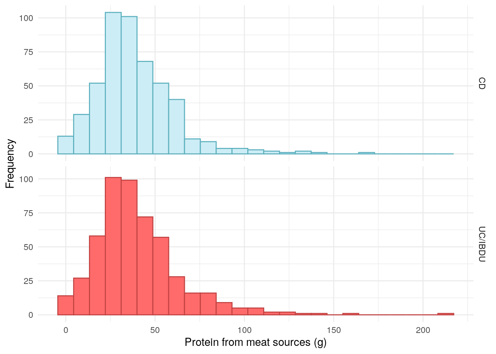
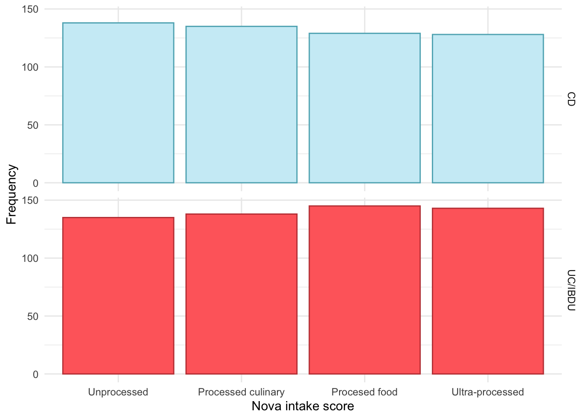
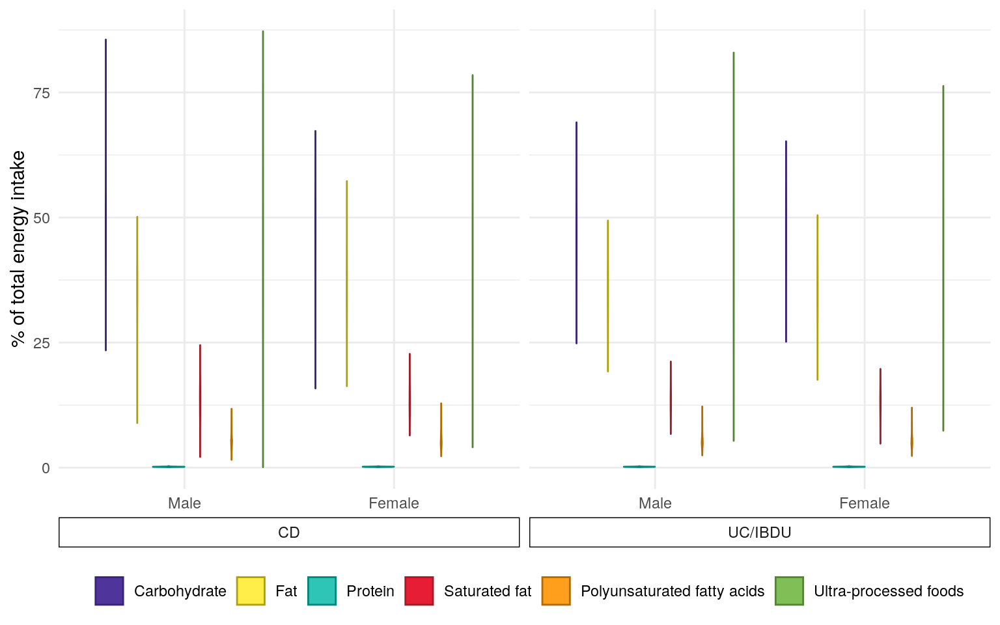

set.seed(123)################ Packages ################library(plyr)# Used for mapping valuessuppressPackageStartupMessages(library(tidyverse))# ggplot2, dplyr, and magrittrlibrary(readxl)# Read in Excel fileslibrary(lubridate)# Handle dateslibrary(datefixR)# Standardise dateslibrary(patchwork)# Arrange ggplots# Generate tablessuppressPackageStartupMessages(library(table1))library(knitr)library(pander)# Generate flowchart of cohort derivationlibrary(DiagrammeR)library(DiagrammeRsvg)# paths to PREdiCCt dataif(file.exists("/docker")){# If running in dockerdata.path<-"data/final/20221004/"redcap.path<-"data/final/20231030/"prefix<-"data/end-of-follow-up/"outdir<-"data/processed"}else{# Run on OS directlydata.path<-"/Volumes/igmm/cvallejo-predicct/predicct/final/20221004/"redcap.path<-"/Volumes/igmm/cvallejo-predicct/predicct/final/20231030/"prefix<-"/Volumes/igmm/cvallejo-predicct/predicct/end-of-follow-up/"outdir<-"/Volumes/igmm/cvallejo-predicct/predicct/processed/"}demo<-readRDS(paste0(outdir, "demo-biochem.RDS"))FFQ<-read_xlsx(paste0(prefix,"predicct ffq_nutrientfood groupDQI all foods_data (n1092)Nov2022.xlsx"))FFQ$ParticipantNo<-FFQ$participantnodemo<-merge(demo,FFQ[, c("ParticipantNo", "Meat_sum", "fibre", "PUFA_percEng", "NOVAScore_cat")], by ="ParticipantNo", all.x =TRUE, all.y =FALSE)
Whilst data for many dietary variables have been collected, this report will focus on the data outlined in the SAP.
Protein from animal-sources
Dietary fibre
Polyunsaturated fatty acids (PUFAs)
Nova intake score
The data for these variables were extracted from the FFQs. As reported associations between dietary data and IBD are often specific to a form of IBD rather than IBD as a whole, these data will be presented stratified by disease type.
Protein from meat sources
Figure 1 suggests there are relatively few vegetarians in the PREdiCCt cohort. Whilst some extreme values were observed for protein from meat sources, they remain plausible.
Code
demo%>%drop_na(Meat_sum)%>%ggplot(aes(x =Meat_sum, color =diagnosis2, fill =diagnosis2))+geom_histogram(bins =25)+theme_minimal()+theme(legend.position ="none")+labs( x ="Protein from meat sources (g)", y ="Frequency", color ="IBD type", fill ="IBD type")+scale_fill_manual( labels =c("UC/IBDU", "Crohn's"), values =c("#CDEDF6", "#FF6B6B"))+scale_color_manual( labels =c("UC/IBDU", "Crohn's"), values =c("#5EB1BF", "#C24343"))+facet_grid(rows =vars(diagnosis2))

Figure 1: Distribution of protein intake from meat.
No association was observed between protein intake from meat and FC.
Table 1: ANOVA between protein intake from meat and FC groups.
Analysis of Variance Model
Df
Sum Sq
Mean Sq
F value
Pr(>F)
cat
2
2499
1250
2.297
0.1011
Residuals
1009
548990
544.1
NA
NA
Dietary fibre
Fibre has frequently investigated as a potential factor in IBD pathogenesis, particularly in CD.
A study of 170,776 women across 26 years found fibre intake, particularly fibre derived from fruits, to be low for incident CD patients (Ananthakrishnan et al. 2013).
A US study of 1,130 CD subjects found CD patients who reported that they did not avoid high-fibre foods were approximately 40% less likely to have a disease flare in a 6-month period than those who avoided high-fibre foods (Brotherton et al. 2016).
There is less evidence of a relationship between UC and dietary fibre.
There does not appear to be substantial differences in fibre between CD and UC/IBDU PREdiCCt participants.
Table 2: ANOVA between dietary fibre and FC groups.
Analysis of Variance Model
Df
Sum Sq
Mean Sq
F value
Pr(>F)
cat
2
68.97
34.48
0.3141
0.7305
Residuals
1009
110777
109.8
NA
NA
Polyunsaturated fatty acids
PUFAs exhibit anti-inflammatory properties and there is evidence of a relationship between PUFAs and UC incidence (Marion-Letellier et al. 2013). Research suggests that a diet with a poor balance of n-3 and n-6 PUFAs, commonly seen in “Western” diets is associated with IBD risk.
The PREdiCCt SAP states n-6 PUFAs will be examined. However, the data obtained from the FFQs describes PUFAs as a whole (including n-3 PUFAs).
Table 3: ANOVA between polyunsaturated fatty acids and FC groups.
Analysis of Variance Model
Df
Sum Sq
Mean Sq
F value
Pr(>F)
cat
2
8.176
4.088
2.365
0.09451
Residuals
1009
1744
1.729
NA
NA
Nova intake score
There has been a great deal of recent research interest in ultra processed food (UPF) and IBD. For example, Narula et al. (2021) found UPF intake to be positively associated with IBD risk.
The Nova score is a popular approach for classifying UPFs (Monteiro et al. 2017). Food is classified as either unprocessed, processed culinary, processed food, or ultra-processed via the Nova score. The University of Aberdeen have developed an extension of the Nova score, the Nova intake score, which can be used to categorise individuals and their diets instead of individual food items.
The following definition of the Nova intake score was written by Liam McAdie during a 5th year medical elective in which he worked on the PREdiCCt dietary data. The formulae have received minor modifications, but otherwise the definitions remain unchanged from McAdie’s work.
Definition
When completing the FFQ, participants were asked to report (a) portion size normally consumed, (b) number of times this portion is consumed in one day and (c) number of days per week food type is consumed. Participant’s daily average consumption (in grams) of a food and drink type (x) was calculated by:
x=\frac{c}{7}(a+b)
Standardised number of portions consumed daily for food and drink type (y) was calculated by dividing consumption (x) by the Foods Standard Agency average UK-portion size (z).
y= \frac{x}{z}
Nova intake scores (N) were calculated by multiplying the number of standardised portions consumed (y) by their corresponding Nova score (M) assigned in the database. This process is repeated for all 169 food and drink types and totalled to give one overall Nova intake score. This score is a marker representative of UPF intake.
N = \sum_{i = 1}^{169} (y_i M_i)
Results
The distribution of Nova intake score appears to be uniform across the cohort, as such, it seems likely that these data have been mapped to quantiles and are no longer describing Nova Score categories.
Code
demo$NOVAScore_cat<-factor(demo$NOVAScore_cat, levels =1:4, labels =c("Unprocessed","Processed culinary","Procesed food","Ultra-processed"))demo%>%drop_na(NOVAScore_cat)%>%ggplot(aes(x =NOVAScore_cat, color =diagnosis2, fill =diagnosis2))+geom_bar()+theme_minimal()+theme(legend.position ="none")+labs( x ="Nova intake score", y ="Frequency", color ="IBD type", fill ="IBD type")+scale_fill_manual( values =c("#CDEDF6", "#FF6B6B"))+scale_color_manual( values =c("#5EB1BF", "#C24343"))+facet_grid(rows =vars(diagnosis2))

Figure 4: Distribution of Nova intake scores.
No significant association was observed between Nova intake scores and FC groups.
Figure 5 presents macronutrient, PUFA and UPF intake as percentages of total energy intake.
Code
FFQ$Prot_percEng<-((FFQ$Protng*4)/FFQ$EnergykCAL)*100comparison<-reshape2::melt(FFQ, id.vars ="ParticipantNo", measure.vars =c("CHO_percEng","Fat_percEng","Prot_percEng","SatFat_percEng","PUFA_percEng","UPF_perenergy"))comparison<-merge(comparison,demo[,c("ParticipantNo", "Sex", "diagnosis2")], by ="ParticipantNo", all.x =TRUE, all.y =FALSE)p<-ggplot(comparison,aes(color =variable, fill =variable, y =value, x =Sex))+geom_violin()+facet_grid(~diagnosis2, scales ="free_x", space ="free_x", switch ="x")+theme_minimal()+theme(strip.placement ="outside", strip.background =element_rect(fill ="white"), strip.clip ="on", axis.title.x =element_blank(), legend.position ="bottom")+scale_fill_manual(values =c("#4F359B","#FFED49","#2EC4B6","#E71D36","#FF9F1C","#80BF56"), labels =c("Carbohydrate","Fat","Protein","Saturated fat","Polyunsaturated fatty acids", "Ultra-processed foods"))+scale_color_manual(values =c("#392376","#ADA009","#00877C","#9F1C29","#B06B01","#568238"), labels =c("Carbohydrate","Fat","Protein","Saturated fat","Polyunsaturated fatty acids", "Ultra-processed foods"))+labs(y ="% of total energy intake", color ="", fill ="")+guides(colour =guide_legend(nrow =1), fill =guide_legend(nrow =1))ggsave("../plots/baseline/diet.png", p, width =12*0.8, height =7*0.8)ggsave("../plots/baseline/diet.pdf", p, width =12*0.8, height =7*0.8)p

Figure 5: Dietary distribution of the FFQ subcohort expressed as percentages of energy intake and stratified by sex and diagnosis of either Crohn’s disease or ulcerative colitis/inflammatory bowel disease unclassified.
Ananthakrishnan, Ashwin N., Hamed Khalili, Gauree G. Konijeti, Leslie M. Higuchi, Punyanganie de Silva, Joshua R. Korzenik, Charles S. Fuchs, Walter C. Willett, James M. Richter, and Andrew T. Chan. 2013. “A Prospective Study of Long-Term Intake of Dietary Fiber and Risk of Crohn’s Disease and Ulcerative Colitis.”Gastroenterology 145 (5): 970–77. https://doi.org/10.1053/j.gastro.2013.07.050.
Brotherton, Carol S., Christopher A. Martin, Millie D. Long, Michael D. Kappelman, and Robert S. Sandler. 2016. “Avoidance of Fiber Is Associated with Greater Risk of Crohn’s Disease Flare in a 6-Month Period.”Clinical Gastroenterology and Hepatology 14 (8): 1130–36. https://doi.org/10.1016/j.cgh.2015.12.029.
Marion-Letellier, Rachel, Guillaume Savoye, Beck Paul L., Remo Panaccione, and Subrata Ghosh. 2013. “Polyunsaturated Fatty Acids in Inflammatory Bowel Diseases: A Reappraisal of Effects and Therapeutic Approaches.”Inflammatory Bowel Diseases 19 (3): 650–61. https://doi.org/10.1097/mib.0b013e3182810122.
Monteiro, Carlos Augusto, Geoffrey Cannon, Jean-Claude Moubarac, Renata Bertazzi Levy, Maria Laura C Louzada, and Patrícia Constante Jaime. 2017. “The UN Decade of Nutrition, the NOVA Food Classification and the Trouble with Ultra-Processing.”Public Health Nutrition 21 (1): 5–17. https://doi.org/10.1017/s1368980017000234.
Narula, Neeraj, Emily C L Wong, Mahshid Dehghan, Andrew Mente, Sumathy Rangarajan, Fernando Lanas, Patricio Lopez-Jaramillo, et al. 2021. “Association of Ultra-Processed Food Intake with Risk of Inflammatory Bowel Disease: Prospective Cohort Study.”BMJ, July, n1554. https://doi.org/10.1136/bmj.n1554.
Source Code
---title: "Diet"author: - name: "Nathan Constantine-Cooke" corresponding: true url: https://scholar.google.com/citations?user=2emHWR0AAAAJ&hl=en&oi=ao affiliations: - ref: CGEM - ref: HGUbibliography: Baseline.bib ---## Introduction```{R}set.seed(123)################ Packages ################library(plyr) # Used for mapping valuessuppressPackageStartupMessages(library(tidyverse)) # ggplot2, dplyr, and magrittrlibrary(readxl) # Read in Excel fileslibrary(lubridate) # Handle dateslibrary(datefixR) # Standardise dateslibrary(patchwork) # Arrange ggplots# Generate tablessuppressPackageStartupMessages(library(table1))library(knitr)library(pander)# Generate flowchart of cohort derivationlibrary(DiagrammeR)library(DiagrammeRsvg)# paths to PREdiCCt dataif (file.exists("/docker")) { # If running in docker data.path <-"data/final/20221004/" redcap.path <-"data/final/20231030/" prefix <-"data/end-of-follow-up/" outdir <-"data/processed"} else { # Run on OS directly data.path <-"/Volumes/igmm/cvallejo-predicct/predicct/final/20221004/" redcap.path <-"/Volumes/igmm/cvallejo-predicct/predicct/final/20231030/" prefix <-"/Volumes/igmm/cvallejo-predicct/predicct/end-of-follow-up/" outdir <-"/Volumes/igmm/cvallejo-predicct/predicct/processed/"}demo <-readRDS(paste0(outdir, "demo-biochem.RDS"))FFQ <-read_xlsx(paste0( prefix,"predicct ffq_nutrientfood groupDQI all foods_data (n1092)Nov2022.xlsx"))FFQ$ParticipantNo <- FFQ$participantnodemo <-merge(demo, FFQ[, c("ParticipantNo", "Meat_sum", "fibre", "PUFA_percEng", "NOVAScore_cat")],by ="ParticipantNo",all.x =TRUE,all.y =FALSE)```PREdiCCt has collected data on diet via food frequency questionnaires (FFQs) andfood diaries. This dietary data has been analysed by staff at the[University of Aberdeen](https://www.abdn.ac.uk/), primarily by[Dr Janet Kyle](https://www.abdn.ac.uk/iahs/profiles/j.kyle), [Dr Graham Horgan](https://www.bioss.ac.uk/people/graham), and[Professor Alex Johnstone](https://www.abdn.ac.uk/rowett/research/profiles/alex.johnstone).Whilst data for many dietary variables have been collected, this reportwill focus on the data outlined in the SAP.1. Protein from animal-sources1. Dietary fibre1. Polyunsaturated fatty acids (PUFAs)1. Nova intake scoreThe data for these variables were extracted from the FFQs. As reportedassociations between dietary data and IBD are often specific to a form of IBDrather than IBD as a whole, these data will be presented stratified by diseasetype. ## Protein from meat sources@fig-meat-sum-dist suggests there are relatively few vegetarians in the PREdiCCtcohort. Whilst some extreme values were observed for protein from meat sources,they remain plausible. ```{R}#| label: fig-meat-sum-dist#| fig-cap: "Distribution of protein intake from meat."#| warning: falsedemo %>%drop_na(Meat_sum) %>%ggplot(aes(x = Meat_sum, color = diagnosis2, fill = diagnosis2)) +geom_histogram(bins =25) +theme_minimal() +theme(legend.position ="none") +labs(x ="Protein from meat sources (g)",y ="Frequency",color ="IBD type",fill ="IBD type" ) +scale_fill_manual(labels =c("UC/IBDU", "Crohn's"),values =c("#CDEDF6", "#FF6B6B") ) +scale_color_manual(labels =c("UC/IBDU", "Crohn's"),values =c("#5EB1BF", "#C24343") ) +facet_grid(rows =vars(diagnosis2))```No association was observed between protein intake from meat and FC.```{R}#| label: tbl-meat-sum#| tbl-cap: "ANOVA between protein intake from meat and FC groups."pander(summary(aov(Meat_sum ~ cat, data = demo)))```## Dietary fibreFibre has frequently investigated as a potential factor in IBD pathogenesis,particularly in CD. A study of 170,776 women across 26 years found fibreintake, particularly fibre derived from fruits, to be low for incident CDpatients [@ananthakrishnan_2013].A US study of 1,130 CD subjects found CD patients who reported that they did notavoid high-fibre foods were approximately 40\% less likely to have a diseaseflare in a 6-month period than those who avoided high-fibre foods [@brotherton_2016].There is less evidence of a relationship between UC and dietary fibre. There does not appear to be substantial differences in fibre between CD andUC/IBDU PREdiCCt participants. ```{R}#| label: fig-fibre-dist#| fig-cap: "Distribution of dietary fibre."#| warning: falsedemo %>%drop_na(fibre) %>%ggplot(aes(x = fibre, color = diagnosis2, fill = diagnosis2)) +geom_histogram(bins =25) +theme_minimal() +theme(legend.position ="none") +labs(x ="Dietary fibre",y ="Frequency",color ="IBD type",fill ="IBD type" ) +scale_fill_manual(values =c("#CDEDF6", "#FF6B6B") ) +scale_color_manual(values =c("#5EB1BF", "#C24343") ) +facet_grid(rows =vars(diagnosis2))```No association was found between dietary fibre intake and FC. ```{R}#| label: tbl-fibre#| tbl-cap: "ANOVA between dietary fibre and FC groups."pander(summary(aov(fibre ~ cat, data = demo)))```## Polyunsaturated fatty acidsPUFAs exhibit anti-inflammatory properties and there is evidence of arelationship between PUFAs and UC incidence [@Marion_Letellier_2013]. Researchsuggests that a diet with a poor balance of n-3 and n-6 PUFAs, commonly seen in"Western" diets is associated with IBD risk. The PREdiCCt SAP states n-6 PUFAs will be examined. However, the data obtainedfrom the FFQs describes PUFAs as a whole (including n-3 PUFAs).```{R}#| label: fig-pufa-dist#| fig-cap: "Distribution of polyunsaturated fatty acids."#| warning: falsedemo %>%drop_na(cat) %>%ggplot(aes(x = PUFA_percEng, color = diagnosis2, fill = diagnosis2)) +geom_histogram(bins =25) +theme_minimal() +theme(legend.position ="none") +labs(x ="PUFA intake",y ="Frequency",color ="IBD type",fill ="IBD type" ) +scale_fill_manual(values =c("#CDEDF6", "#FF6B6B") ) +scale_color_manual(values =c("#5EB1BF", "#C24343") ) +facet_grid(rows =vars(diagnosis2))```A significant association was not seen between PUFA intake and FC. ```{R}#| label: tbl-pufa#| tbl-cap: "ANOVA between polyunsaturated fatty acids and FC groups."pander(summary(aov(PUFA_percEng ~ cat, data = demo)))```## Nova intake scoreThere has been a great deal of recent research interest in ultra processed food(UPF) and IBD. For example, @Narula_2021 found UPF intake to be positivelyassociated with IBD risk. The Nova score is a popular approach for classifying UPFs [@Monteiro_2017]. Foodis classified as either unprocessed, processed culinary, processed food, orultra-processed via the Nova score. The University of Aberdeen have developed anextension of the Nova score, the Nova intake score, which can be used tocategorise individuals and their diets instead of individual food items.The following definition of the Nova intake score was written by Liam McAdie during a 5th year medical elective in which he worked on the PREdiCCt dietarydata. The formulae have received minor modifications, but otherwise thedefinitions remain unchanged from McAdie's work. ### DefinitionWhen completing the FFQ, participants were asked to report ($a$) portion sizenormally consumed, ($b$) number of times this portion is consumed in one day and($c$) number of days per week food type is consumed. Participant’s daily averageconsumption (in grams) of a food and drink type ($x$) was calculated by:$$x=\frac{c}{7}(a+b)$$Standardised number of portions consumed daily for food and drink type ($y$) wascalculated by dividing consumption ($x$) by the Foods Standard Agency averageUK-portion size ($z$). $$y= \frac{x}{z}$$Nova intake scores ($N$) were calculated by multiplying the number ofstandardised portions consumed ($y$) by their corresponding Nova score ($M$)assigned in the database. This process is repeated for all 169 food and drinktypes and totalled to give one overall Nova intake score. This score is a markerrepresentative of UPF intake.$$N = \sum_{i = 1}^{169} (y_i M_i)$$### ResultsThe distribution of Nova intake score appears to be uniform across the cohort,as such, it seems likely that these data have been mapped to quantiles and areno longer describing Nova Score categories. ```{R}#| label: fig-novas-dist#| fig-cap: "Distribution of Nova intake scores."demo$NOVAScore_cat <-factor(demo$NOVAScore_cat,levels =1:4,labels =c("Unprocessed","Processed culinary","Procesed food","Ultra-processed" ))demo %>%drop_na(NOVAScore_cat) %>%ggplot(aes(x = NOVAScore_cat, color = diagnosis2, fill = diagnosis2)) +geom_bar() +theme_minimal() +theme(legend.position ="none") +labs(x ="Nova intake score",y ="Frequency",color ="IBD type",fill ="IBD type" ) +scale_fill_manual(values =c("#CDEDF6", "#FF6B6B") ) +scale_color_manual(values =c("#5EB1BF", "#C24343") ) +facet_grid(rows =vars(diagnosis2))```No significant association was observed between Nova intake scores and FCgroups. ```{R}#| tbl-cap: "Chi-squared test between Nova intake score and FC groups."pander(chisq.test(demo$NOVAScore_cat, demo$cat))``````{R}saveRDS(demo, paste0(outdir, "demo-diet.RDS"))```## Comparison@fig-diet-dist presents macronutrient, PUFA and UPF intake as percentages oftotal energy intake.```{R}#| label: fig-diet-dist#| fig-cap: "Dietary distribution of the FFQ subcohort expressed as percentages of energy intake and stratified by sex and diagnosis of either Crohn’s disease or ulcerative colitis/inflammatory bowel disease unclassified."#| warning: false#| fig-width: 8FFQ$Prot_percEng <- ((FFQ$Protng *4)/FFQ$EnergykCAL) *100comparison <- reshape2::melt(FFQ,id.vars ="ParticipantNo",measure.vars =c("CHO_percEng","Fat_percEng","Prot_percEng","SatFat_percEng","PUFA_percEng","UPF_perenergy"))comparison <-merge(comparison, demo[,c("ParticipantNo", "Sex", "diagnosis2")],by ="ParticipantNo",all.x =TRUE,all.y =FALSE)p <-ggplot(comparison,aes(color = variable, fill = variable, y = value, x = Sex)) +geom_violin() +facet_grid(~diagnosis2,scales ="free_x",space ="free_x", switch ="x") +theme_minimal() +theme(strip.placement ="outside", strip.background =element_rect(fill ="white"), strip.clip ="on",axis.title.x =element_blank(),legend.position ="bottom") +scale_fill_manual(values =c("#4F359B","#FFED49","#2EC4B6","#E71D36","#FF9F1C","#80BF56"),labels =c("Carbohydrate","Fat","Protein","Saturated fat","Polyunsaturated fatty acids", "Ultra-processed foods")) +scale_color_manual(values =c("#392376","#ADA009","#00877C","#9F1C29","#B06B01","#568238"),labels =c("Carbohydrate","Fat","Protein","Saturated fat","Polyunsaturated fatty acids", "Ultra-processed foods")) +labs(y ="% of total energy intake", color ="",fill ="") +guides(colour =guide_legend(nrow =1),fill =guide_legend(nrow =1))ggsave("../plots/baseline/diet.png", p, width =12*0.8, height =7*0.8)ggsave("../plots/baseline/diet.pdf", p, width =12*0.8, height =7*0.8)p```## Reproduction and reproducibility {.appendix}<details class = "appendix"> <summary> Session info </summary>```{R Session info}#| echo: falsepander::pander(sessionInfo())```</details>Licensed by <a href="https://creativecommons.org/licenses/by/4.0/">CC BY</a> unless otherwise stated.